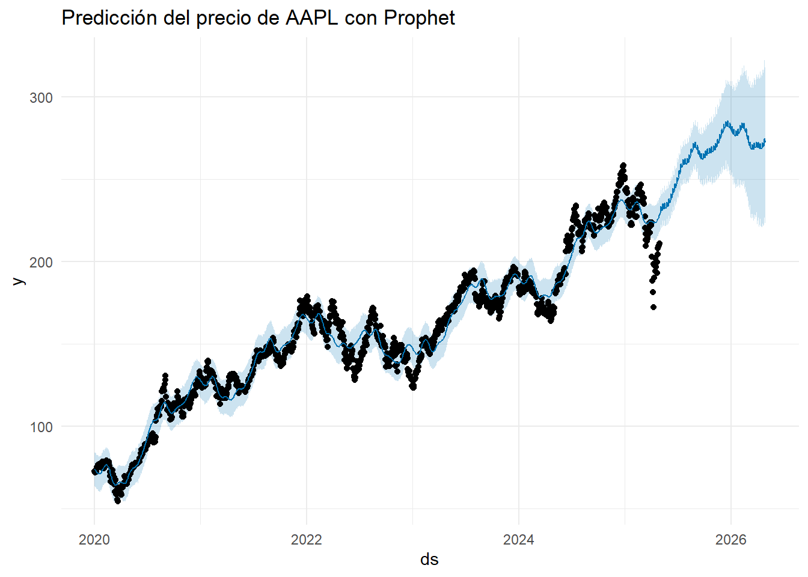
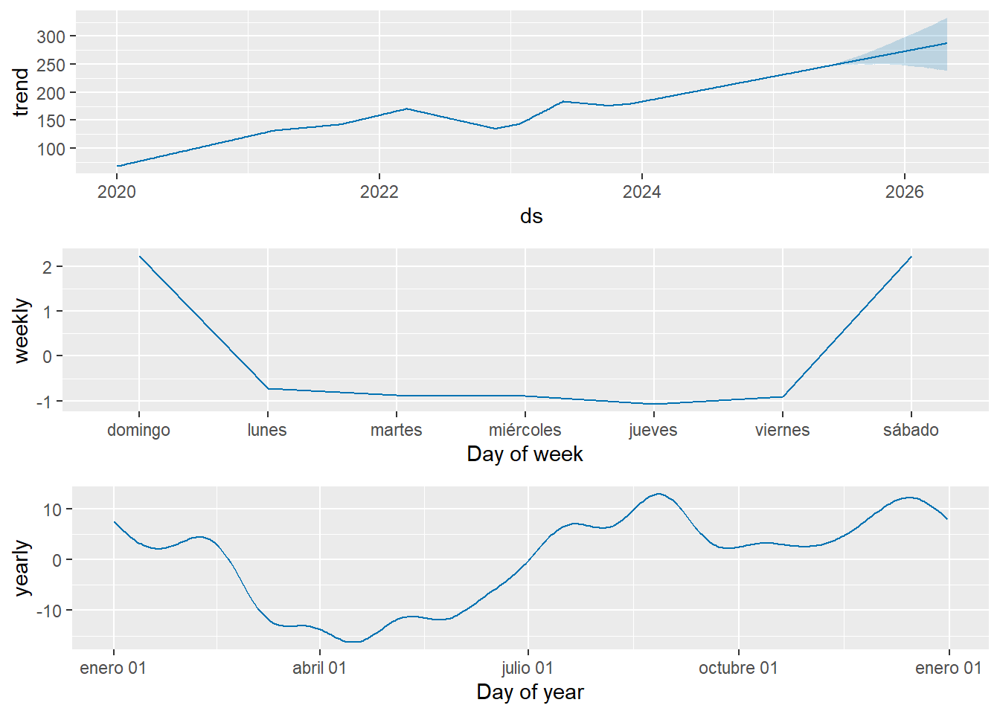

Capitulo6 Regresión en Series de Tiempo con Prophet.
6.1 Introducción.
En esta unidad se explora el uso de modelos de regresión aplicados a series de tiempo, integrando técnicas estadísticas convencionales con algoritmos de aprendizaje estadístico. Particularmente, se utilizará el algoritmo Facebook Prophet, ampliamente reconocido por su capacidad de modelar tendencias, estacionalidades y efectos de eventos en datos temporales. Se aplicará sobre la serie histórica de precios ajustados de Apple Inc. (AAPL), con el fin de realizar predicciones fundamentadas en su comportamiento histórico.
6.2 Objetivo.
Aplicar el algoritmo Prophet como modelo de regresión sobre una serie temporal financiera (AAPL), justificando su utilidad frente a modelos lineales o ARIMA, y evaluando su capacidad predictiva sobre los datos históricos.
6.3 Justificación del uso de Prophet.
Prophet es un algoritmo de código abierto desarrollado por Facebook para el análisis y predicción de series temporales con fuertes componentes de tendencia y estacionalidad. Su facilidad de uso, robustez ante valores atípicos y capacidad para modelar cambios de tendencia lo convierten en una herramienta ideal para series financieras como la de AAPL. A diferencia de modelos ARIMA, Prophet permite descomponer automáticamente los componentes y ajustar predicciones incluso con fechas irregulares.
6.4 Script: Preparación de los datos.
# Instalar y cargar paquetes
if (!require("tidyquant")) install.packages("tidyquant")
library(tidyquant)
# Descargar datos históricos desde Yahoo Finance
apple_data <- tq_get("AAPL", from = "2020-01-01", to = "2025-04-30")
# Vista previa
head(apple_data)| symbol | date | open | high | low | close | volume | adjusted |
|---|---|---|---|---|---|---|---|
| AAPL | 2020-01-02 | 74.0600 | 75.1500 | 73.7975 | 75.0875 | 135480400 | 72.62084 |
| AAPL | 2020-01-03 | 74.2875 | 75.1450 | 74.1250 | 74.3575 | 146322800 | 71.91482 |
| AAPL | 2020-01-06 | 73.4475 | 74.9900 | 73.1875 | 74.9500 | 118387200 | 72.48785 |
| AAPL | 2020-01-07 | 74.9600 | 75.2250 | 74.3700 | 74.5975 | 108872000 | 72.14694 |
| AAPL | 2020-01-08 | 74.2900 | 76.1100 | 74.2900 | 75.7975 | 132079200 | 73.30751 |
| AAPL | 2020-01-09 | 76.8100 | 77.6075 | 76.5500 | 77.4075 | 170108400 | 74.86462 |
# Instalar si no está Prophet
#if (!require("prophet")) install.packages("prophet")
library(prophet)
library(tidyquant)
library(dplyr)
# Descargar datos de AAPL
apple_data <- tq_get("AAPL", from = "2020-01-01", to = "2025-04-30") %>%
select(date, adjusted) %>%
rename(ds = date, y = adjusted)
# Ver estructura
head(apple_data)| ds | y |
|---|---|
| 2020-01-02 | 72.62082 |
| 2020-01-03 | 71.91483 |
| 2020-01-06 | 72.48786 |
| 2020-01-07 | 72.14694 |
| 2020-01-08 | 73.30753 |
| 2020-01-09 | 74.86462 |
6.5 Datos.
Se descargan los datos históricos de precios ajustados de Apple Inc. y se renombran las columnas según el formato requerido por Prophet: ds para fechas y y para el valor numérico.
6.6 Entrenamiento del modelo Prophet.
Una vez preparados los datos con estructura compatible (ds, y), se entrena el modelo Prophet. Este proceso se realiza con la función prophet(), que ajusta automáticamente componentes de tendencia, estacionalidad y residuos a la serie temporal.
# Crear y entrenar el modelo
modelo_prophet <- prophet(apple_data)
# Crear marco de fechas a futuro (12 meses)
futuro <- make_future_dataframe(modelo_prophet, periods = 365)
# Generar predicción
prediccion <- predict(modelo_prophet, futuro)
# Visualizar resultado
plot(modelo_prophet, prediccion) +
ggtitle("Predicción del precio de AAPL con Prophet") +
theme_minimal()
Explicación:
El modelo se entrena con los datos históricos y genera predicciones para un año adicional. La gráfica resultante muestra la serie observada, el valor ajustado y el pronóstico con bandas de incertidumbre.
Descripción técnica: prophet(apple_data) ajusta el modelo con base en los precios diarios de AAPL, detectando automáticamente cambios de tendencia, días con mayor varianza y estacionalidades relevantes.
make_future_dataframe() genera un calendario extendido de 365 días futuros, lo que permite simular el comportamiento de los precios para todo el año siguiente.
predict() aplica el modelo ajustado y genera predicciones para cada fecha del nuevo marco temporal, devolviendo un dataframe con:
yhat: valor predicho
yhat_lower y yhat_upper: bandas de confianza (80% por defecto)
Análisis visual:
- El gráfico muestra
La línea azul principal: valores predichos (yhat) de la acción AAPL.
- Sombra gris claro: intervalos de confianza para cada fecha futura.
En el rango histórico (2020–2025), se observa un ajuste suave sobre la tendencia subyacente.
En el rango futuro (2025–2026), el modelo proyecta una continuación de la tendencia positiva, aunque con mayor incertidumbre (bandas más anchas).
Interpretación: Prophet estima que, de mantenerse las condiciones actuales, el precio ajustado de AAPL seguiría una trayectoria creciente moderada durante el año siguiente.
El uso de bandas de confianza es clave para la toma de decisiones gerenciales, ya que permite planear bajo distintos escenarios (optimista, base, pesimista).
6.7 Componentes del modelo (tendencia, estacionalidad).
Una vez entrenado el modelo y generadas las predicciones, es fundamental descomponer el comportamiento de la serie para entender los factores que influyen en las variaciones de la variable objetivo (precio ajustado de AAPL). Para esto, se emplea la función prophet_plot_components().

6.8 Explicación:
Esta visualización permite examinar la descomposición automática del modelo:
Tendencia estimada
Estacionalidad semanal
Estacionalidad anual (si aplica) Ideal para interpretar comportamientos estructurales de la serie.
¿Qué muestra esta visualización? Esta función genera una serie de gráficos separados que ilustran:
Tendencia (Trend)
Muestra la evolución subyacente del precio de la acción a lo largo del tiempo.
En este caso, se observa una tendencia positiva con algunos tramos de aceleración y desaceleración, típicos de un activo con comportamiento de largo plazo al alza.
Estacionalidad anual (Yearly seasonality)
Identifica patrones que se repiten en el mismo mes del año.
Por ejemplo, si hay alzas sistemáticas en ciertos meses (e.g., octubre por eventos de tecnología o cierres fiscales), el modelo las representa suavemente.
Estacionalidad semanal (Weekly seasonality)
Refleja el comportamiento recurrente dentro de una semana. Aunque para activos bursátiles este patrón puede estar sesgado por la falta de datos los fines de semana, Prophet lo modela si encuentra suficiente evidencia.
A menudo, los lunes o viernes pueden mostrar volatilidad distinta por decisiones de portafolio o eventos financieros.
Interpretación general:
El análisis de componentes es clave para validar si el modelo está capturando adecuadamente estructuras repetitivas en la serie.
Permite diagnosticar si existe estacionalidad fuerte o si el comportamiento depende principalmente de la tendencia (como parece ser el caso de AAPL).
También sirve para comunicar de manera transparente a los tomadores de decisión qué elementos están impulsando las predicciones del modelo.
6.9 Comparación con modelos anteriores (ARIMA vs Prophet).
En unidades previas se aplicaron modelos ARIMA a la serie de precios de AAPL. Si bien estos modelos demostraron buena capacidad de ajuste, requieren supuestos fuertes como la estacionariedad y no siempre capturan fácilmente efectos de estacionalidad múltiple o rupturas de tendencia.
Prophet, en contraste:
No exige preprocesamiento complejo (como diferenciación manual).
Detecta automáticamente estacionalidad y tendencias no lineales.
Permite extender fácilmente horizontes de predicción.
Por tanto, Prophet se presenta como una excelente alternativa en contextos donde se necesita agilidad, flexibilidad y robustez ante cambios estructurales.
6.10 Conclusiones.
El algoritmo Prophet se ajustó exitosamente a la serie de precios históricos de Apple Inc. desde 2020 hasta abril de 2025, entregando proyecciones con bandas de confianza para el año siguiente.
La descomposición automática del modelo facilitó el análisis de la tendencia subyacente y patrones de estacionalidad semanal, sin necesidad de diferenciación previa ni supuestos de estacionariedad.
Prophet demostró ser una alternativa más intuitiva y visual frente a modelos ARIMA, especialmente en contextos exploratorios o productivos.
La aplicación de Prophet permite abordar el problema como una regresión de series de tiempo, con control explícito sobre fechas, eventos y feriados futuros.
6.11 Bibliografía.
Yahoo Finance. (2025). Apple Inc. (AAPL) Stock Price & Historical Data. Recuperado de https://finance.yahoo.com/quote/AAPL
Dancho, M. & Vaughan, D. (2021). tidyquant: Tidy Quantitative Financial Analysis. R package version 1.0.4. Recuperado de https://business-science.github.io/tidyquant/
Hyndman, R. J. & Athanasopoulos, G. (2021). Forecasting: Principles and Practice (3ra ed.). OTexts. Disponible en https://otexts.com/fpp3/
Cowpertwait, P. & Metcalfe, A. (2009). Introductory Time Series with R. Springer. DOI: 10.1007/978-0-387-88698-5
Shumway, R. H., & Stoffer, D. S. (2017). Time Series Analysis and Its Applications: With R Examples (4ta ed.). Springer.
R Core Team. (2023). R: A Language and Environment for Statistical Computing. R Foundation for Statistical Computing. Disponible en https://www.R-project.org/
Analytics Vidhya. (2021). Holt-Winters Method for Time Series Analysis. Recuperado de: https://www.analyticsvidhya.com/blog/2021/08/holt-winters-method-for-time-series-analysis/
R Documentation. HoltWinters() y forecast packages. Recuperado de https://www.rdocumentation.org/packages/stats/versions/3.6.2/topics/HoltWinters
Wickham, H., & Grolemund, G. (2016). R for Data Science. O’Reilly Media.
aylor, S. J. & Letham, B. (2018). Forecasting at scale. The American Statistician, 72(1), 37–45. DOI: https://doi.org/10.1080/00031305.2017.1380080
Facebook Prophet Official Documentation: https://facebook.github.io/prophet/